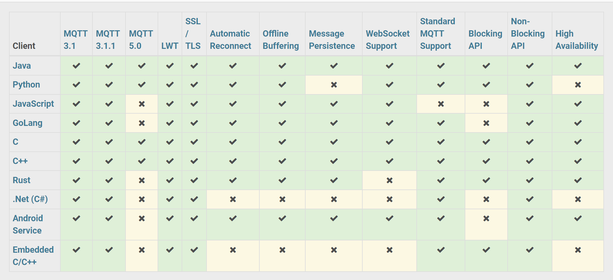
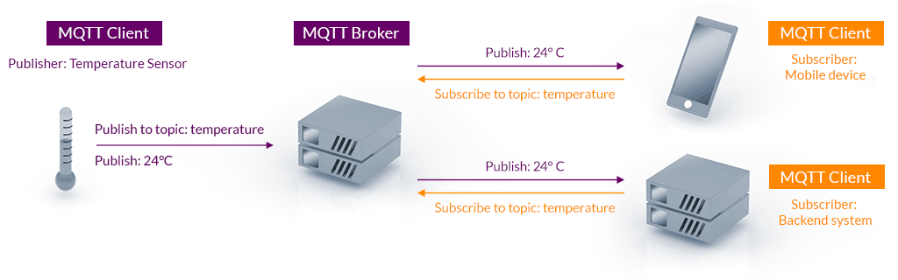
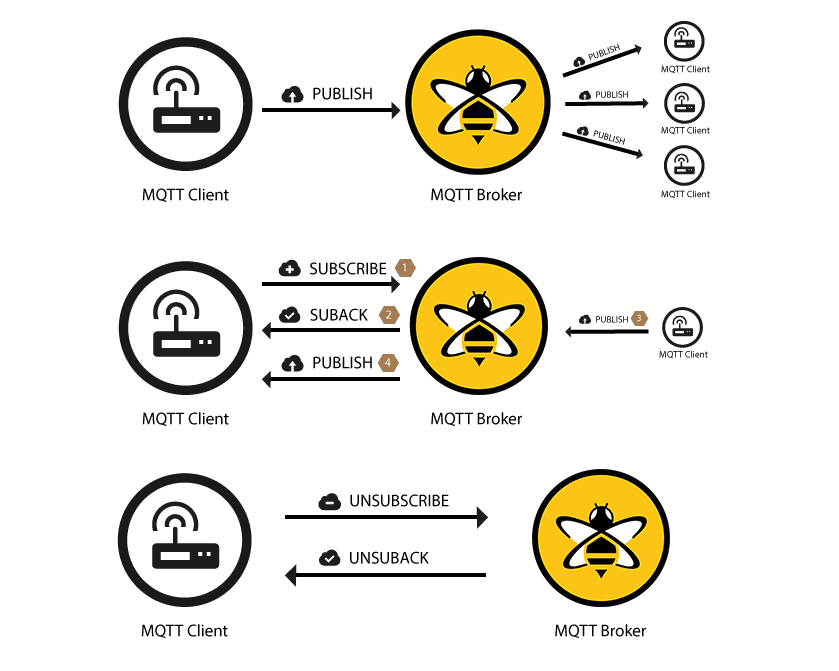

MQTT และการใช้งานสำหรับ Linux (ตอนที่ 1)#
▷ MQTT#
MQTT ("เอ็ม-คิว-ที-ที") ย่อมาจากคำว่า Message Queuing Telemetry Transport เป็นโพรโทคอล (Protocol) สำหรับการติดต่อสื่อสารกันระหว่างคอมพิวเตอร์ (Machine-to-Machine: M2M) เพื่อใช้ในการส่งข้อความ (Message Delivery) ผ่านระบบเครือข่าย เหมาะสำหรับงานด้าน IoT (Internet of Things)
MQTT ได้รับการกำหนดให้เป็นมาตรฐานตั้งแค่ปีค.ศ. 2014 โดยองค์กรที่เรียกว่า OASIS
- MQTT v3.1.1 Specification (December 2015) และได้เป็นมาตรฐาน ISO/IEC 20922 ในปีค.ศ. 2016
- เวอร์ชันล่าสุดคือ MQTT v5.0 Specification (March 2019)
ในปัจจุบัน มีไลบรารีในภาษาต่าง ๆ ที่เป็น Open Source สำหรับการเขียนโปรแกรม เพื่อให้ทำงานเป็น MQTT Client เช่น ภาษา Arduino, C/C++, Python, Java, JavaScript / NodeJS เป็นต้น
- Eclipse Paho Library (C, Python, ...)
- HiveMQ MQTT Client Library (Java)
- MQTT.js และ Async-MQTT.js (Node.js)

รูป: Paho MQTT Client (v1.4) Comparison (Source: Eclipse.org)
ถ้าเป็นแอปพลิเคชันสำหรับการลองใช้งาน MQTT ก็มีตัวเลือกดังนี้
GUI-based MQTT Client Applications
▷ หลักการทำงานของ MQTT#
MQTT ทำงานอยู่บนชั้นของโพรโทคอล Transmission Control Protocol / Internet Protocol (TCP/IP) ตามการแบ่งชั้นของ 7- Layer OSI Model และใช้วิธีการส่งและรับข้อความได้ทั้งสองทิศทาง สถาปัตยกรรมของระบบ MQTT เป็นไปตามรูปแบบที่เรียกว่า Client-Server Pattern (ผู้ขอรับบริการ / ผู้ให้บริการ) และ Publisher-Subscriber Pattern (ผู้เผยแพร่ข้อความ / ผู้สมัครรับข้อความ)
การทำงานของ MQTT ประกอบด้วยสองส่วนหลักคือ MQTT Server ("เซิร์ฟเวอร์") หรือ เรียกว่า MQTT Broker ("โบรกเกอร์" หรือ "ตัวกลาง" หรือ "นายหน้า") ทำหน้าที่คอยรับและกระจายข้อความ และ MQTT Client ("ไคลเอนต์") หรือ ผู้ส่งหรือรับข้อความและติดต่อกับโบรกเกอร์ ซึ่งอาจเป็นอุปกรณ์ IoT และมีได้หลายอุปกรณ์ ทั้งสองฝ่ายไม่จำเป็นต้องติดต่อหรือเชื่อมต่อกันทางเครือข่ายตลอดเวลา (การเชื่อมต่ออาจเป็นแบบ Always-connected หรือ Sometime-connected ก็ได้)
การส่งข้อความด้วย MQTT เป็นแบบอะซิงโครนัส (Asynchronous Message Queuing) หมายความว่า ทั้งสองฝ่าย (ผู้เผยแพร่ข้อความและผู้สมัครรับข้อความ) ไม่จำเป็นต้องตอบสนองกันทันที และไม่ต้องสื่อสารกันโดยตรง
MQTT มีความแตกต่างจากการทำงานของโพรโทคอล HTTP (Hyper Text Transfer Protocol) ในหลายประเด็น เช่น HTTP ใช้วิธีการสื่อสารแบบ Peer-to-Peer และ HTTP Client จะต้องเป็นฝ่ายเริ่มก่อนโดยการส่ง HTTP Request เพื่อขอใช้บริการจาก HTTP Server และได้รับการตอบกลับมาเป็น HTTP Response เป็นต้น
 รูป: ตัวอย่างรูปแบบการใช้งาน MQTT สำหรับอุปกรณ์ IoT (Source: mqtt.org)
 รูป: การเผยแพร่และสมัครรับข้อความในระบบ MQTT (Source: HiveMQ)
การส่งข้อความจากอุปกรณ์ (เรียกส่วนนี้ว่า Message Publication) ต้องทำผ่านโบรกเกอร์ ซึ่งเป็นตัวกลางและทำหน้าที่กระจายข้อความที่รับได้นั้น หากอุปกรณ์ใดต้องการรับข้อความ จะต้องสมัครรับข้อความตามหัวข้อก่อน (เรียกส่วนนี้ว่า Topic-based Message Subscription) โดยสามารถระบุหัวข้อที่สนใจได้ หัวข้อแบ่งได้เป็นหลายระดับ (Topic Levels) และเลือกสมัครรับข้อความตามหัวข้อที่แบ่งระดับชั้นได้
อุปกรณ์ MQTT Client สามารถทำหน้าที่เป็นได้ทั้ง Publisher และ Subscriber หรืออย่างใดอย่างหนึ่งในแต่ละช่วงเวลา และยกเลิกการสมัครรับข้อความจากโบรกเกอร์
โบรกเกอร์ทำหน้าที่กรองข้อความที่ได้รับเข้ามาตามหัวข้อที่อุปกรณ์ได้สมัครการรับข้อความเอาไว้ (Topic-based Message Filtering) ก่อนส่งหรือกระจายข้อความออกไป หรือสามารถเก็บรักษาไว้ในคิวของข้อความ (Message Queue) เช่น สำหรับกรณีที่อุปกรณ์ที่ได้สมัครรับข้อความ ยังไม่ได้เชื่อมต่อเข้ามา หรือเกิดปัญหาชั่วคราวกับระบบเครือข่ายในการเชื่อมต่อ เป็นต้น
MQTT รองรับการเข้ารหัสข้อมูล (Data Encryption) เพื่อความปลอดภัยในการสื่อสารข้อมูล การยืนยันตัวตนเพื่อเข้าใช้บริการ (Authentication and Authorization) และรองรับการเชื่อมต่อด้วยโพรโทคอล WebSockets ที่ทำงานอยู่บน TCP/IP ได้เช่นกัน
▷ MQTT Connection#
อุปกรณ์แต่ละตัวจะต้องเริ่มต้นด้วยการสร้างการเชื่อมต่อ (MQTT Connection) และสร้าง MQTT Session โดยส่งแพ็กเกตตามรูปแบบที่กำหนดไว้ไปยังโบรกเกอร์
ตารางแสดงแพ็กเกตที่เกี่ยวข้องกับการทำงานของ MQTT เรียกว่า (MQTT Control Packets)
| Control Packet | Direction of Packet Flow | Description |
|---|---|---|
| CONNECT | Client to Broker | Connection request |
| CONNACK | Broker to Client | Connect acknowledgment |
| SUBSCRIBE | Client to Broker | Subscribe request |
| SUBACK | Broker to Client | Subscribe acknowledgment |
| UNSUBSCRIBE | Client to Broker | Unsubscribe request |
| UNSUBACK | Broker to Client | Unsubscribe acknowledgment |
| PINGREQ | Client to Broker | PING request |
| PINGRESP | Broker to Client | PING response |
| DISCONNECT | Bidirectional | Disconnect notification |
| PUBLISH | Bidirectional | Publish message |
| PUBACK | Bidirectional | Publish acknowledgment (QoS 1) |
| PUBREC | Bidirectional | Publish received (QoS 2) |
| PUBREL | Bidirectional | Publish released (QoS 2) |
| PUBCOMP | Bidirectional | Publish complete (QoS 2) |
| AUTH | Bidirectional | Authentication |
การส่งข้อความ (MQTT Message Delivery) แบ่งเป็นสองกรณี จำแนกตามผู้ส่งและผู้รับ และไม่มีการสื่อสารกันระหว่างไคลเอนต์
- ตัวส่งคือ ผู้เผยแพร่ข้อความ (MQTT Publisher) และตัวรับคือ โบรกเกอร์ (MQTT Broker)
- ตัวส่งคือ โบรกเกอร์ และตัวรับคือ ผู้สมัครรับข้อความ (MQTT Subscriber)
ไคลเอนต์เริ่มต้นด้วยการส่งแพ็กเกต CONNECT ไปยังโบรกเกอร์ และจะได้รับการตอบกลับจากโบรกเกอร์ด้วยแพ็กเกต CONNACK
เมื่อได้สร้างการเชื่อมต่อได้แล้ว หลังจากนั้นจะต้องมีการส่งข้อความไปยังโบรกเกอร์เป็นระยะ ๆ
โดยส่งข้อความที่เรียกว่า Keep-Alive Message ในรูปแบบของแพ็กเกต PINGREQ
แล้วรอการตอบกลับด้วยแพ็กเกต PINGRESP เช่น ทำการส่งแพ็กเกตภายใน 60 วินาที ต่อหนึ่งครั้ง
ซึ่งกำหนดโดยค่าพารามิเตอร์ keepAlive
ข้อมูลที่จะถูกส่งไปในแพ็กเกต CONNECT ได้แก่
clientIdเป็นตัวระบุชื่อของ MQTT Client ที่ต้องการเชื่อมต่อกับโบรกเกอร์ แนะนำให้ใช้ Universal Unique Identifier (UUID) ขนาด 36 ตัวอักขระ (MQTTv5.0)cleanSessionเป็นค่าบูลีน ถ้ามีค่าเป็นtrueหมายความว่า เมื่อจบการเชื่อมต่อ จะไม่มีการเก็บข้อมูลเกี่ยวกับ MQTT Client หรือถ้าเคยเชื่อมต่อแบบ Persistent Session ไว้ก่อนหน้าแล้ว จะยกเลิกและเคลียร์ข้อมูลที่เก็บไว้ทิ้งไป เช่น หัวข้อต่าง ๆ ที่เคยสมัครรับข้อความเอาไว้ หรือ ข้อความที่ยังไม่ได้รับและยังค้างอยู่ แต่ถ้ามีค่าเป็นfalseหมายถึง การเริ่มต้นแบบที่เรียกว่า Persistent Sessionusername(optional) เป็นชื่อผู้ใช้สำหรับตรวจสอบสิทธิ์การใช้งานpassword(optional) เป็นรหัสผ่านสำหรับตรวจสอบสิทธิ์การใช้งานkeepAliveเป็นระยะเวลามากที่สุด (หน่วยเป็นวินาที) ที่ไม่มีการส่งแพ็กเกตสื่อสารกัน แต่ยังถือว่ายังเชื่อมต่อกันอยู่ หรือจะตั้งค่าเป็น 0 ก็ได้
ยังมีส่วนอื่นอีกในแพ็กเกต CONNECT (แต่ไม่จำเป็นต้องมี) เช่น หาก MQTT Client
ไม่ได้จบการเชื่อมต่อโดยการส่งแพ็กเกต DISCONNECT ไปยังโบรกเกอร์ แต่หายไปเอง นานเกินช่วงเวลาที่กำหนดไว้
(เกินระยะเวลาของ Session Lifetime)
เมื่อเกิดกรณีแบบนี้ (เรียกว่า Unexpected Client Disconnection)
ต้องการจะให้โบรกเกอร์ส่งข้อความแทนหรือไม่ เป็นการส่งครั้งสุดท้าย (Last Will & Testament Message)
โดยใช้ข้อความและหัวข้อตามที่ระบุไว้เมื่อเชื่อมต่อกับโบรกเกอร์ครั้งแรก เป็นต้น
lastWillTopic(optional)lastWillQos(optional)lastWillMessage(optional)lastWillRetain(optional)
▷ MQTT Message Publication / Subscription#
เมื่อเชื่อมต่อกับโบรกเกอร์ได้แล้ว ก็สามารถส่งข้อความไปยังโบรกเกอร์ได้
โดยส่งแพ็กเกต PUBLISH ซึ่งมีข้อมูล เช่น
packetIdเป็นตัวระบุแพ็กเกตที่ส่งไป (Packet Identifier)topicNameเป็นหัวข้อสำหรับข้อความที่ส่งไปqosเป็นค่า Quality of Service (QoS) Level เลือกได้ 3 ระดับคือ 0, 1, 2retainFlagมีค่าเป็นบูลีน ถ้าเป็นtrueหมายความว่า ข้อความตามหัวข้อที่ส่งไปนั้น ให้เก็บเอาไว้ที่โบรกเกอร์ด้วย (เรียกว่า Retained Message) และหลังจากนั้นถ้ามี MQTT Client เชื่อมต่อเข้ามาใหม่ และสมัครรับข้อความในหัวข้อเดียวกัน จะได้รับข้อความดังกล่าวจากโบรกเกอร์โดยอัตโนมัติpayloadเป็นข้อความที่ส่งไปdupFlagเป็นค่าบูลีน (Duplicate Flag) และระบุว่า ข้อความนี้เป็นการส่งซ้ำหรือไม่ เนื่องจากการส่งข้อความก่อนหน้านั้น (ด้วย QoS ที่มากกว่า 0) ไม่มีการตอบกลับจากโบรกเกอร์
แพ็กเกต PUBLISH จะถูกส่งจากผู้ส่งไปยังผู้รับ มีสองกรณี คือ
1) จากผู้เผยแพร่ข้อความไปยังโบรกเกอร์ และ 2) จากโบรกเกอร์ไปยังผู้สมัครรับข้อความ
และทั้งสองกรณีนี้เกิดขึ้นอิสระจากกัน ต่างช่วงเวลากัน
หากต้องการสมัครรับข้อความ จะต้องส่งแพ็กเกต SUBSCRIBE ไปยังโบรกเกอร์ ซึ่งจะต้องมีการระบุหัวข้อ
และ QoS Level สำหรับหัวข้อดังกล่าว จากนั้นโบรกเกอร์จะต้องตอบกลับด้วยแพ็กเกต
SUBACK (Subscription Acknowledgement)
แต่หากว่า จะยกเลิกการสมัครรับข้อความ ให้ส่งแพ็กเกต UNSUBSCRIBE ไปยังโบรกเกอร์ และจะได้รับแพ็กเกต
UNSUBACK ตอบกลับมา เพื่อยืนยันการยกเลิก
▷ MQTT Topics#
หัวข้อสำหรับการเผยแพร่หรือสมัครรับข้อความ มีลักษณะดังนี้
- เป็นข้อความแบบ UTF-8 String โดยทั่วไปก็เป็นข้อความ ASCII จำแนกความแตกต่างของตัวพิมพ์ใหญ่และเล็ก (Case-Sensitive) และจะต้องไม่มีช่องว่าง (Space)
- มีสัญลักษณ์
/เป็นตัวแบ่งระดับ (Topic Level Separator) - ข้อความในแต่ละระดับของหัวข้อ จะต้องมีอย่างน้อย 1 ตัวอักษระ
- หากไม่ต้องการเจาะจง คือ จะเป็นข้อความอะไรก็ได้ ก็จะใช้สัญลักษณ์สำหรับ MQTT Wildcards
+เป็น Single-level Wildcard ใช้แทนข้อความอะไรก็ได้หนึ่งระดับในชื่อหัวข้อ#เป็น Multi-level Wildcard ใช้แทนข้อความอะไรก็ได้ในหลายระดับต่อกันในชื่อหัวข้อ
- หากเริ่มต้นด้วย
$เช่น$SYS/จะใช้กับชื่อหัวข้อที่สงวนไว้ใช้งานโดย MQTT Broker - พยายามเลือกหรือตั้งชื่อหัวข้อให้สั้น ได้ความหมาย ไม่ยาวเกินไป
- ไม่ควรสมัครรับข้อความโดยใช้หัวข้อ
#เพราะเป็นการรับข้อความทั้งหมดที่ถูกส่งเข้ามา
ตัวอย่างการกำหนดชื่อหัวข้อ (Topic Names) ที่มีการแบ่งเป็นหลายระดับชั้น
home/livingroom/sensor1/gethome/livingroom/sensor2/gethome/kitchen/sensor3/gethome/kitchen/sensor4/gethome/kitchen/light-switch1/gethome/kitchen/light-switch1/set
ตัวอย่างการใช้ MQTT Wildcards
home/livingroom/sensor1/#home/livingroom/#home/kitchen/+/get
▷ QoS of Message Delivery#
ในการเผยแพร่หรือสมัครรับข้อความ สามารถระบุระดับคุณภาพการให้บริการได้ หรือ QoS (Quality of Service) มี 3 ระดับ ดังนี้ แต่ถ้าไม่ระบุจะเป็นระดับ QoS=0
- 0 (at most once) มีการส่งแพ็กเกต
PUBLISHจากตัวส่งไปยังตัวรับ แต่ไม่มีการการันตีหรือการรับประกันว่าจะได้รับหรือไม่ ไม่มีการยืนยันการได้รับข้อความ หากได้ผู้รับได้รับแพ็กเกต ก็จะมีแค่แพ็กเกตเดียวเท่านั้น ถ้าหากว่าเครือข่ายมีความเสถียร และยอมรับได้ หากมีข้อความสูญหายบ้างในระหว่างการส่งหรือไม่ได้รับ ก็อาจเลือกใช้ QoS=0 - 1 (at least once) มีการส่งแพ็กเกต
PUBLISHไปยังตัวรับ ตัวส่งเก็บข้อความนั้นเอาไว้ในหน่วยความจำแบบคิว และรอจนกว่าจะได้PUBACKจากตัวรับตอบกลับมา ถ้าเกินระยะเวลาที่กำหนดไว้ จะส่งแพ็กเกตไปอีกครั้ง (DUP flag=1) และทำขั้นตอนนี้ซ้ำไปจนกว่าจะได้รับPUBACKเมื่อได้รับPABACKแล้ว ตัวส่งจะลบข้อความที่เก็บไว้ในคิวออกไป ในกรณีนี้ อาจเป็นได้ว่า มีการส่งข้อความไปมากกว่าหนึ่งครั้ง และตัวรับอาจได้รับข้อความเดียวกันมากกว่าหนึ่งครั้ง หรือ Duplicates (จากหลายแพ็กเกตที่มีการส่งซ้ำ) - 2 (exactly once) มีการส่งแพ็กเกต
PUBLISHไปยังตัวรับ และตัวส่งเก็บข้อความดังกล่าวนั้นเอาไว้ในหน่วยความจำแบบคิว รอจนกว่าอีกฝ่ายจะส่งแพ็กเกตPUBRECตอบกลับมา แต่ถ้ายังไม่ได้รับ จะมีการส่งแพ็กเกตPUBLISH(DUP flag=1) ไปอีกครั้ง หากว่าได้รับแพ็กเกตPUBREC(Publish Received) จากตัวรับมาแล้ว ตัวส่งจะลบข้อความที่เก็บไว้ในคิวออกไป แล้วส่งแพ็กเกตPUBREL(Publish Released) ไปยังตัวรับ จากนั้นตัวรับจะต้องตอบกลับด้วยPUBCOMP(Publish Completed) แต่ถ้าตัวส่งไม่ได้รับPUBCOMPจะส่งPUBRELไปยังตัวรับอีกครั้ง การใช้ QoS=2 เป็นการสื่อสารในลักษณะที่เรียกว่า Four-Step Handshaking และตัวรับจะได้รับเพียงข้อความเดียวเท่านั้น แต่การใช้ QoS=2 จะมีขั้นตอนและใช้เวลามากกว่าในการส่งข้อความ
▷ Public MQTT Brokers#
การให้บริการโดยโบรกเกอร์ MQTT แบ่งได้เป็น 2 ประเภท คือ
- Private: โบรกเกอร์เพื่อใช้งานภายใน ไม่เปิดให้ผู้อื่นเข้ามาใช้งาน
มีการตรวจสอบชื่อบัญชีผู้ใช้และรหัสผ่าน (เป็นการทำ User Authentication ในระดับแอปพลิเคชัน) เป็นต้น
- ตัวอย่างการใช้งาน เช่น การใช้คอมพิวเตอร์บอร์ดเดียว Raspberry Pi ติดตั้งระบบปฏิบัติการ Linux และ Mosquitto MQTT Broker ให้บริการกับอุปกรณ์ภายในบ้าน (Smart Home)
- Public: โบรกเกอร์ที่เปิดให้ใช้งานได้ฟรี อาจมีข้อกำจัดอยู่บ้าง เช่น จำนวนการส่งข้อความต่อช่วงเวลา อาจมีผู้ใช้งานจำนวนมากและให้บริการอยู่ในต่างประเทศ ซึ่งส่งผลต่อความล่าช้าในการรับส่งข้อความหรือไม่ได้รับข้อความบางส่วน
MQTT Brokers สามารถเปิดพอร์ตบริการได้หลายหมายเลข เพื่อให้บริการหลายรูปแบบ เช่น
- Encryption: การเข้ารหัสข้อมูลสำหรับ MQTT payload
- ถ้าไม่มีการเข้ารหัสป้องกันข้อมูล ก็นิยมใช้พอร์ต 1883 (default port)
- ถ้ามีการเข้ารหัส ก็ใช้วิธีที่เรียกว่า Asymmetric (Public/Private) Key Encryption โดยใช้ช่องทางสื่อสารที่ปลอดภัย (Secure Transmission Channel)
- Authentication: การยืนยันตัวตน
- Username/Password Authentication: การยืนยันตัวตนด้วยชื่อผู้ใช้และรหัสผ่าน
- Client Authentication: การเชื่อมต่อไปยังโบรกเกอร์ ทุกไคลเอนต์จะต้องใช้ไฟล์ที่เรียกว่า X.509 Digital Certificate เพื่อยืนยันตัวตนกับโบรกเกอร์
- MQTT over WebSockets: มีการติดต่อสื่อสารด้วยโพรโทคอล WebSockets (รองรับการใช้งานโพรโทคอล TLS: Transport Layer Security v1.3 / v1.2 / v1.1) หรือไม่
มาดูตัวอย่างหมายเลขพอร์ตของ test.mosquitto.org
เป็น Public Mosquitto MQTT Broker
ที่เปิดบริการให้ทดลองใช้งานได้ฟรี
(ดูไฟล์การตั้งค่าใช้งาน Config File)
- 1883 (unencrypted, unauthenticated)
- 1884 (unencrypted, authenticated)
- 8883 (encrypted, unauthenticated)
- 8884 (encrypted, client certificate required)
- 8885 (encrypted, authenticated)
- 8886 (encrypted, unauthenticated)
- 8887 (encrypted, server certificate deliberately expired)
หมายเลขพอร์ตต่อไปนี้ ใช้สำหรับการเชื่อมต่อผ่าน WebSockets และใช้งานได้กับ Web Browser / Web App
- 8080 (MQTT over WebSockets, unencrypted, unauthenticated)
- 8081 (MQTT over WebSockets, encrypted, unauthenticated)
- 8090 (MQTT over WebSockets, unencrypted, authenticated)
- 8091 (MQTT over WebSockets, encrypted, authenticated)
จากข้อมูลเกี่ยวกับหมายเลขพอร์ตของ test.mosquitto.org จะเห็นได้ว่า
- การเลือกใช้พอร์ต
1883จะเป็นวิธีที่ง่ายที่สุด ไม่ต้องระบุชื่อผู้ใช้และรหัสผ่าน แต่ไม่มีการเข้ารหัสข้อมูล แต่ถ้าเลือกพอร์ต1884ต้องระบุชื่อผู้ใช้และรหัสผ่าน เช่นrw:readwriteสำหรับ#(ทุกหัวข้อ) - ถ้าเลือกพอร์ต
8883จะมีการเข้ารหัสข้อมูลตามรูปแบบของ TLS แต่ไม่ต้องระบุชื่อผู้ใช้และรหัสผ่าน และจะต้องใช้ไฟล์ X.509 Server Certificate ของ Test Mosquitto Broker ในการเข้ารหัสข้อมูลก่อนส่งไปยังโบรกเกอร์ - ถ้าเลือกพอร์ต
8884จะเหมือนกรณี8883แต่จะต้องใช้อีกหนึ่งไฟล์ คือ X.509 Client Certificate (signed/verified by mosquitto.org) ถูกนำไปใช้การตรวจสอบและยืนยันตัวตนของ MQTT Client แต่ถ้าใช้พอร์ต8885จะต้องระบุชื่อผู้ใช้และรหัสผ่านด้วย
▷ Open Source MQTT Brokers#
ตัวอย่างซอฟต์แวร์นำมาใช้เป็นโบรกเกอร์ได้ และเป็น Open Source รองรับโพรโทคอล MQTT v3.1/3.1.1 และ v5.0 ได้แก่
- Eclipse Mosquitto (C-based)
- HiveMQ CE (Java-based)
- EMQX (Elixir-based)
- GitHub: https://github.com/emqx
Mosquitto Broker มีไฟล์สำหรับการติดตั้งใช้งานได้หลายระบบปฏิบัติการ เช่น Linux, Windows และ macOS
▷ แหล่งข้อมูลสำหรับศึกษาเพิ่มเติมเกี่ยวกับ MQTT#
- "MQTT Getting Started" by mqtt.org
- "MQTT Essentials" by HiveMQ
- "Beginners Guide To The MQTT Protocol"
- "MQTT for Beginners - Tutorials and Course"
- "The Mosquitto Project by Eclipse"
- "HiveMQ Open Source MQTT Broker"
- "Paho MQTT Client Library" (C, C++, Python, Java, Lua)
▷ กล่าวสรุป#
บทความนี้ได้นำเสนอความรู้เกี่ยวกับโพรโทคอล MQTT และหลักการทำงานในเบื้องต้น และซอฟต์แวร์ประเภท Open Source และผู้ใช้บริการ Public MQTT Brokers สำหรับทดสอบการใช้งาน MQTT
This work is licensed under a Creative Commons Attribution-ShareAlike 4.0 International License.
Created: 2022-09-10 | Last Updated: 2022-09-12